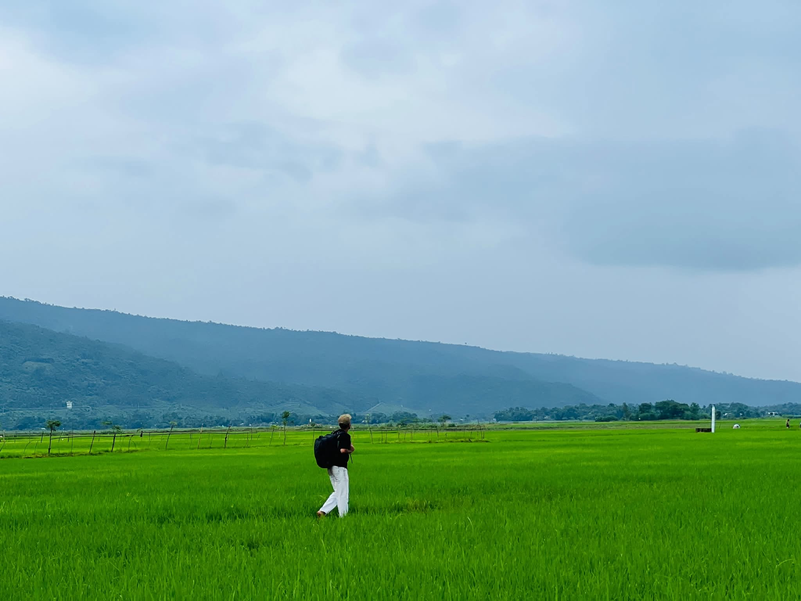

Discover The Unexplored Beauty Of Bangladesh.
From the world’s longest natural sea beach to the mystical mangroves of the Sundarbans, plan your unforgettable journey today.


From the world’s longest natural sea beach to the mystical mangroves of the Sundarbans, plan your unforgettable journey today.
From sun-drenched beaches to wild jungle safaris, discover tailored travel packages across the globe.
Coastal Escapes

jaflong River
Pristine white sands, crystal clear waters.
Music Concert

Army Stadium
Discover some bengali popular music band and enjoy the vibe.
Hidden Waterfall

Sitakunda Waterfall
Grenery of Bangladesh with mountain ,Hills and waterfall."